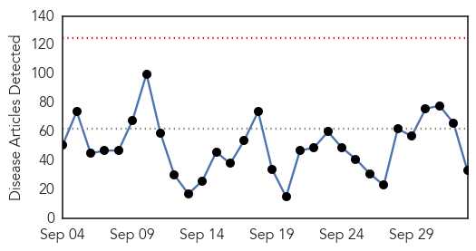
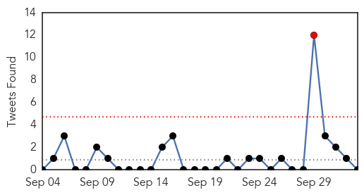
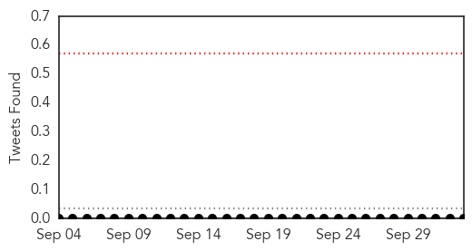

Unknown
30-Day Web Trend
0 alerts, 0 warnings

30-Day Twitter Trend
2 alerts, 0 warnings

Article Locations

Article Confidences
Top Articles:
- 0.978
- No need to close schools
- 0.973
- Caregivers warned to be vigilant in light of Hand, Foot and Mouth Disease
- 0.966
- Ministry of Health Monitors Outbreak in the Region
- 0.933
- Recent Visitor to the North Rim Treated for Tick-Borne Relapsing Fever
- 0.928
- Reusable Tote Bags main cause of Hogs Killing Virus in the US
- 0.917
- Chicago Tribune
- 0.862
- Abuja Bombing: Death Toll Now 20
- 0.824
- DOH confirms death of Saudi national due to ‘suspected’ MERSCOV
- 0.822
- Deadly food bug warning
- 0.811
- Hand Foot And Mouth Outbreak Not Linked To Drought
- 0.754
- One Dead in Morris Park, NY Legionnaires' Disease Outbreak
- 0.726
- UN health agency changes HIV treatment recommendations
- 0.720
- Viral disease killing hundreds of deer in the region
- 0.715
- Binational Health Week kicks off
- 0.708
- Quail, chukar and Hun seasons open tomorrow
- 0.704
- Chula Vista teen battling flesh-eating bacteria continues to hea
- 0.700
- Pittsburgh Veterans Affairs Finds Three Legionella-Contaminated Water Fixtures
- 0.685
- Vatican fires gay priest over ‘irresponsible’ coming out
- 0.685
- Obama slams Russian strikes in Syria as 'recipe for disaster'
- 0.685
- Russia vows to intensify Syria bombing campaign
- 0.685
- Pro-Russia rebels 'pull back tanks' from front line
- 0.685
- Eurotunnel services resume after mass break-in
- 0.685
- Paris dusk-till-dawn ‘Nuit Blanche’ festival goes green
- 0.684
- Inteligencia y Seguridad, Terrorismo Internacional, Transparencia, Corrupcion, Politica y Economia
- 0.680
- Salmonella Thompson outbreak sickens 22 in North Dakota, investigation ongoing
- 0.680
- Norovirus outbreak affects hundreds of Nevada kids, teachers
- 0.659
- Where and how to get flu shots in Berks
- 0.638
- Norovirus: Everything you need to know to try and prevent it spreading in Gloucestershire
- 0.630
- USDA Warns Deadly Piglet Virus Likely Came From China
- 0.629
- The cause of cancer most overlooked by even holistic medicine practitioners
- 0.527
- 'Like the Caudwells, our family also has Lyme disease'
- 0.514
- Various Local Hospitals Offer Free Vaccinations this Season « CBS St. Louis
- 0.501
- Case Of Equine Herpesvirus Confirmed At Parx; Barn Area Closed - Horse Racing News
Top Tweets:
-
No tweets found for Oct 03, 2015
Pertussis
30-Day Web Trend
0 alerts, 0 warnings

30-Day Twitter Trend
0 alerts, 0 warnings

Article Locations

Article Confidences

Top Articles:
Top Tweets:
-
No tweets found for Oct 03, 2015